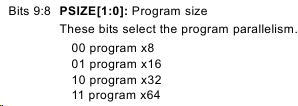
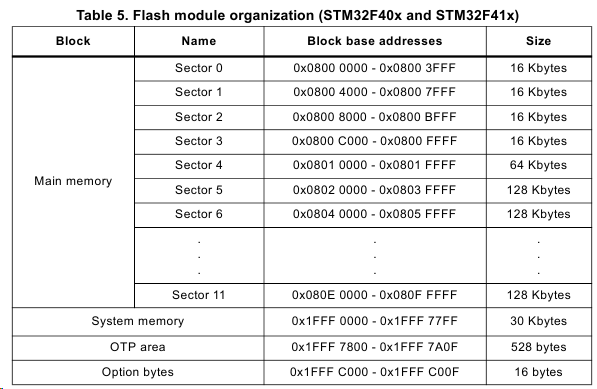
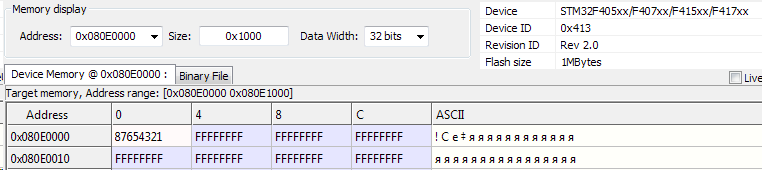

Первым делом идем в РМ и ищем ключи для разблокирования Flash памяти:
Unlocking the Flash control register
After reset, write is not allowed in the Flash control register (FLASH_CR) to protect the Flash memory against possible unwanted operations due, for example, to electric disturbances. The following sequence is used to unlock this register:
1. Write KEY1 = 0x45670123 in the Flash key register (FLASH_KEYR)
2. Write KEY2 = 0xCDEF89AB in the Flash key register (FLASH_KEYR)
Задефайним эти ключи:
#define INT_FLASH_KEY1 ((uint32_t)0x45670123)
#define INT_FLASH_KEY2 ((uint32_t)0xCDEF89AB)
После чего разблокирование flash будет выглядеть следующим образом (порядок критичен - сначала первый, затем второй):
void flashUnlock(void)
{
FLASH->KEYR = INT_FLASH_KEY1;
FLASH->KEYR = INT_FLASH_KEY2;
}
Чтобы заблокировать flash, необходимо установить соответствующий бит в контрольном регистре:
void flashLock(void)
{
FLASH->CR |= FLASH_CR_LOCK;
}
Далее возможна работа с памятью. Например, полное удаление всей flash:
void flashEraseAll(void)
{
flashUnlock();
FLASH->CR |= FLASH_CR_MER;
FLASH->CR |= FLASH_CR_STRT;
flashLock();
}
Чтение памяти по адресу:
uint32_t flashReadData(uint32_t address)
{
return (*(__IO uint32_t*) address);
}
Запись данных по адресу:
void flashWriteData(uint32_t address, uint32_t data)
{
flashUnlock();
FLASH->CR |= FLASH_CR_PSIZE_0; //data size (01 - 16 bits, 10 - 32 bits)
FLASH->CR |= FLASH_CR_PG; //enable flash programming
while((FLASH->SR & FLASH_SR_BSY) != 0); //checking flash is busy
*(__IO uint16_t*)address = (uint16_t)data;
while((FLASH->SR & FLASH_SR_BSY) != 0);
address += 2;
data >>= 16;
*(__IO uint16_t*)address = (uint16_t)data;
while((FLASH->SR & FLASH_SR_BSY) != 0);
FLASH->CR &= ~(FLASH_CR_PG); //disable flash programming
flashLock();
}
В функции выше присутствует FLASH->CR |= FLASH_CR_PSIZE_0, указываюящая на то, что запись будет производиться по 16 бит. Это, вроде как, сделано для совместимости с младшими линейками.

Если выставить в 1 не нулевой, а первый бит, то можно писать по 32 бита, что позволит избавиться от лишних сдвигов, записей и ожиданий:
void flashWriteData(uint32_t address, uint32_t data)
{
flashUnlock();
FLASH->CR |= FLASH_CR_PSIZE_1; //data size (01 - 16 bits, 10 - 32 bits)
FLASH->CR |= FLASH_CR_PG; //enable flash programming
while((FLASH->SR & FLASH_SR_BSY) != 0); //checking flash is busy
*(__IO uint32_t*)address = (uint32_t)data;
while((FLASH->SR & FLASH_SR_BSY) != 0);
FLASH->CR &= ~(FLASH_CR_PG); //disable flash programming
flashLock();
}
Попробуем что-нибудь записать. Возьмем из таблички организации памяти последний сектор:

Задефайним первуя ячейку:
#define FLASH_SECTOR_11 0x080E0000
И запишем по этому адресу любое значение:
flashWriteData(FLASH_SECTOR_11, 0x87654321);
Прошиваем контроллер, подключемся через STUtility, в поиске переходим на искому ячейку и видим наше значение:

По итогу:
void flashUnlock(void);
void flashLock(void);
void flashEraseAll(void);
uint32_t flashReadData(uint32_t address);
void flashWriteData(uint32_t address, uint32_t data);